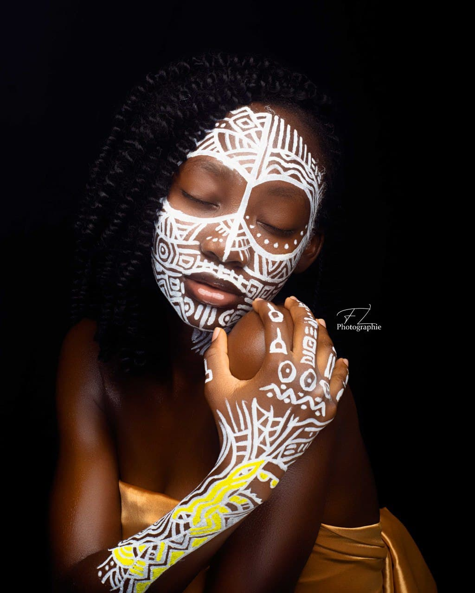

Je réponds au nom de Grace Marielle ADOHINZIN. Technicienne supérieure en Statistique et Designer à WHISPA, je suis passionnée de tricotage. A mes heures perdues, je confectionne de petits trucs comme des porte clés, des boucles d'oreille, des tops etc.Je suis dynamique, travailleuse et très sociable. Je suis ouverte d’esprit et j'aime aller à l'aventure. Whispa est pour moi, la réponse à une formation de qualité dans le domaine du digital. J’ai choisi Whispa pour devenir une experte en Web design.